Inhalt Index DeskTop Bronstein

 Numerische Mathematik Nutzung von Computern Interne Zeichendarstellung Zahlensysteme
Numerische Mathematik Nutzung von Computern Interne Zeichendarstellung Zahlensysteme


Die Umrechnung von einem Zahlensystem in ein anderes wird als Konvertierung bezeichnet. Werden mehrere Zahlensysteme gleichzeitig benutzt, so ist es zur Vermeidung von Irrtümern üblich, die Basis als Index anzuhängen.
| Beispiel |
|
Für die Konvertierung der Dezimalzahl 139.8125 in das Dualsystem, Oktalsystem und Hexadezimalsystem ergibt sich 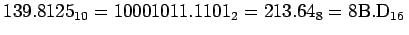. |
Die Konvertierung von Dualzahlen in Oktal- bzw. Hexadezimalzahlen ist einfach dadurch möglich, daß man vom Punkt ausgehend nach links und rechts Gruppen von drei bzw. vier Bits bildet und den Wert derselben bestimmt. Diese Werte sind dann die Ziffern des Oktal- bzw. Hexadezimalsystems.
Für die Konvertierung vom Dezimal- in eines der anderen Systeme gelten für den ganzen und den gebrochenen Teil der Dezimalzahl folgende Algorithmen:
| 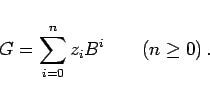 | (19.255) |
Dividiert man G durch  , so erhält man einen ganzzahligen Teil (die Summe) und einen Rest:
, so erhält man einen ganzzahligen Teil (die Summe) und einen Rest:
| 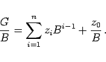 | (19.256) |
Dabei nimmt z0 die Werte 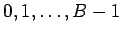 an und ist die niederwertige Ziffer des Zahlensystems. Wendet man das Verfahren jetzt auf die abgespaltete Summe wiederholt an, so ergeben sich die weiteren Ziffern.
| 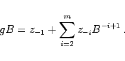 | (19.257) |
Die wiederholte Anwendung auf die entstehenden Summen liefert die Werte 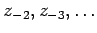
| Beispiel A |
|
Umwandlung der Dezimalzahl 139 in eine Dualzahl: 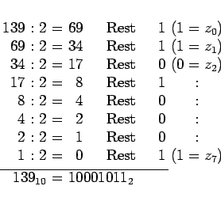
|
| Beispiel B |
|
Umwandlung des Dezimalbruchs 0.8125 in einen Dualbruch: 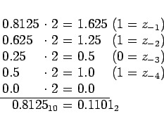
|
Der Algorithmus für die Umwandlung eines Wertes aus dem Dual-, Oktal- oder Hexadezimalsystem in das Dezimalsystem lautet, wobei der Dezimalpunkt nach z0 einzufügen ist:
| 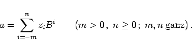 | (19.258) |
Die Auflösung erfolgt dabei zweckmäßig mit dem HORNER-Schema.
| Beispiel |
|
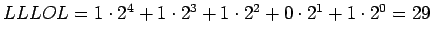. Das zugehörige HORNER-Schema lautet: 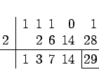
|